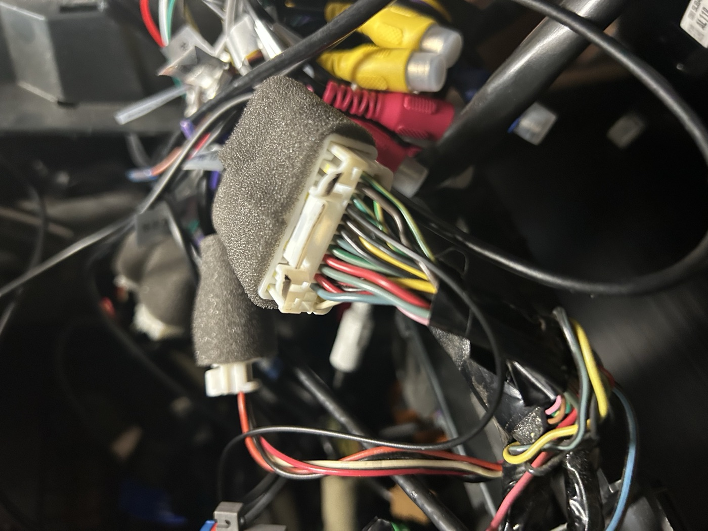

The story
How a flat battery turned into a CAN bus project
Nobody sets out to build an OBD-II scanner because their stereo stopped working. Every step here was forced by the one before it, and the project is what was left standing at the end.
-
A 2016 Outback, in good shape, with one known fault
Bought used. Everything about it was sound except the StarLink telematics module, which was out of service.
-
The 3G network went away, and the radio never noticed
First-generation StarLink reaches the world over a 3G radio, and the US carriers finished switching 3G off in 2022. The module has nothing left to attach to — but rather than give up, it scans. Forever. A transmitter hunting for a network that no longer exists is close to the worst case for current draw, and the result is a car that goes flat in days instead of weeks.
-
The dealer put it to sleep, and the microphone died
Before the car was sold it went to the dealer, who did something to the module to stop it draining the battery. Whatever it was, it worked. It also left the cabin microphone dead. The speakers still played, so this read as a minor annoyance rather than as a clue.
-
Which mattered, because StarLink sits in the middle of the audio
The module is not a peripheral hanging off the stereo. The head unit's front speaker drive enters the module and leaves again on its way to the speakers; the microphone enters and leaves again on its way to the head unit. Subaru's own pinout names them in exactly those terms —
Front speaker input LH -on one pin,Front speaker output LH -on the next — so that the module can duck the stereo and seize the cabin for an SOS call. Every one of those lines is a pass-through. -
Then the head unit was replaced, and everything went quiet
The factory head unit came out in favour of a Hamilton Motor Company conversion kit — CarPlay and Android Auto in the original dash opening. After the install, the speakers and the microphone stopped working.
-
A forum thread explained it exactly
The answer was on subaruoutback.org: pull the factory head unit and nothing is left to complete the loop. Audio that used to go out to StarLink and come back in now goes out and stops. The module was the bridge, and the bridge is what got removed.
-
So the connector came off the board
The module itself was unwanted — it is the connector that matters. Desoldered from the StarLink board, its B half can be bridged pin to pin, tying each input straight to the output it used to feed. Six jumpers, and the arithmetic works out exactly: two front speakers at two polarities each is four, plus microphone signal and microphone ground.
Pin
B8is the odd one out.MIC 5 Vis not a pass-through, it is a supply the factory head unit used to provide, and the CarPlay harness leaves that position unpopulated. It needs a wire run from pin 4 of the radio's harness — an empty cavity from the factory. A crimped pin does it, or a male-to-female Dupont jumper with the plastic shroud pulled off the male end. -
And the other half was too interesting to bin
The repair used only the B side. The A side was still on the bench, and its pinout is an invitation: two separate CAN buses, three power rails, two buttons and two indicator LEDs — on a connector engineered to live in this exact car, already wired, already fused, already in the right place.
That is Scan Hippo.
